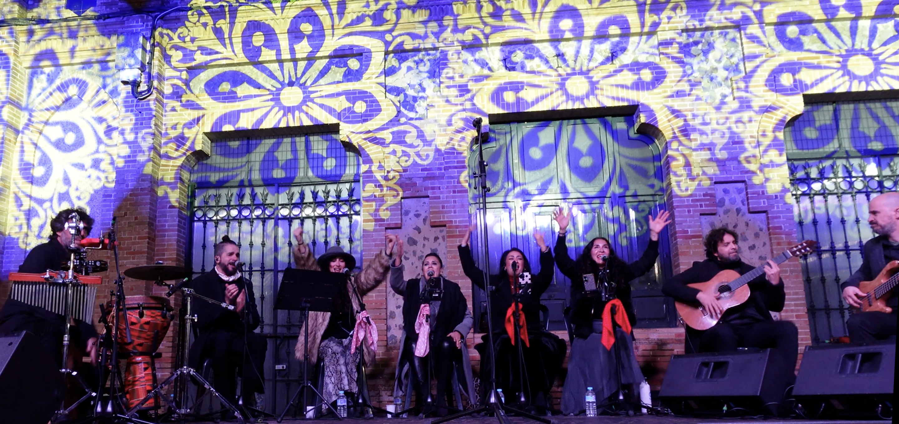
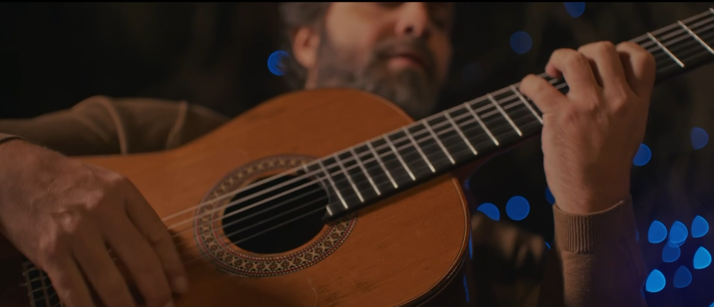
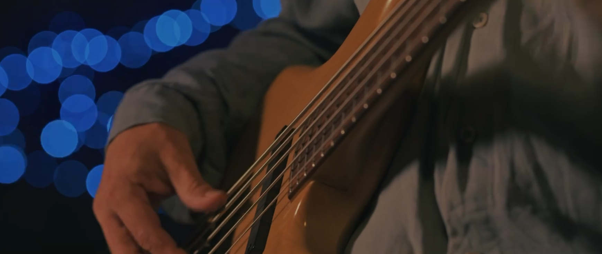
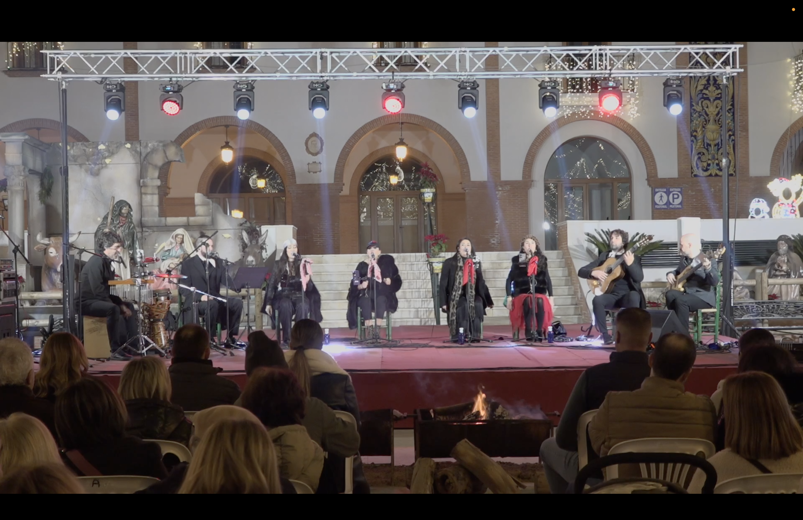

De Pata Negra nace de algo tremendamente andaluz: el flamenco navideño. Y propone llevar al escenario la energía y el espíritu que invaden todas esas reuniones familiares, de vecinos y de amigos, con un repertorio original.
Fundada por Sebastián de la Estación en 2021, De Pata Negra ha actuado para ayuntamientos y entidades culturales de toda Andalucía y Madrid, dentro del circuito flamenco popular e institucional.
En 2026 presentamos Rosa Temprana, un espectáculo propio pensado para teatro, con mayor elaboración artística y vocación de continuidad en los circuitos culturales y teatrales. Una formación de doce músicos y cantaores.
Tradición flamenca navideña para el escenario.




Para información sobre disponibilidad, rider técnico y propuesta económica, escríbenos directamente.
info@sebastiandelaestacion.com